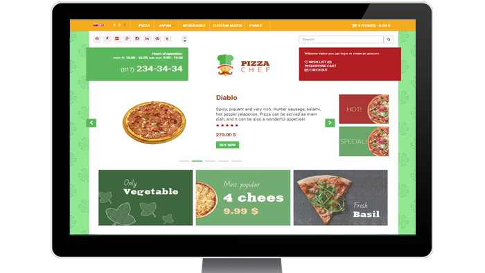
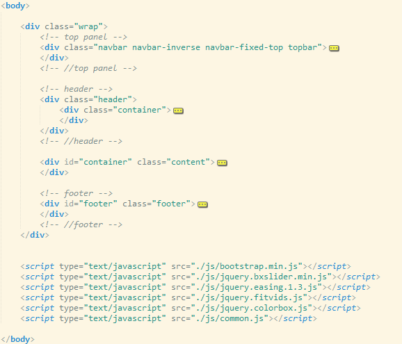
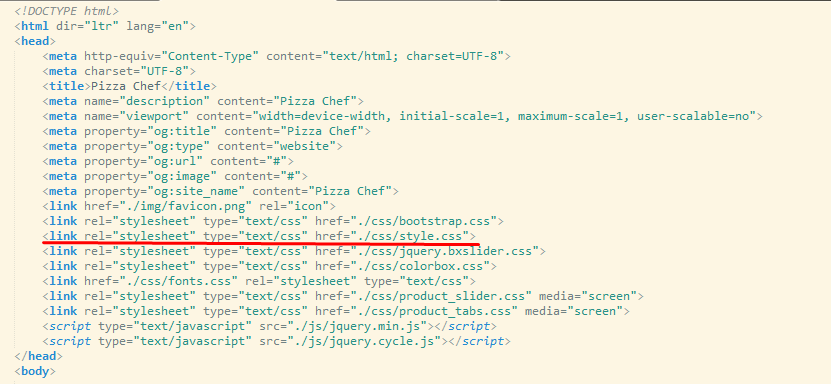

By: Concept Logic
Version: 1.0
Published: 07/2014
Fully responsive HTML template, built in Bootstrap framework. It is designed for e-shops and contains all pages typical for online stores: catalog, product page, shopping cart, checkout page and some others.
Perfect variant for online food ordering sites. Theme is suitable for any other types of e-shops.

This template is adaptive, so it will look equally good not only on the computer but also on tablet PC phone and other gadgets. The template uses Twitter Bootstrap features, details how to implement and modify can be found on the Github page: Twitter Bootstrap.
All major plugins for this template are connected at the bottom of the page after the content; it accelerates considerable the visualization of the site.

All major styles of this template are in the file ./css/style.css. In addition, template uses several additional style files, you can find all of them in the folder ./css

Detailed information about used technologies and options for setting can be found at the links:
Contact for support via our profile page: http://themeforest.net/user/conceptlogic.
Thank you for purchasing this theme!